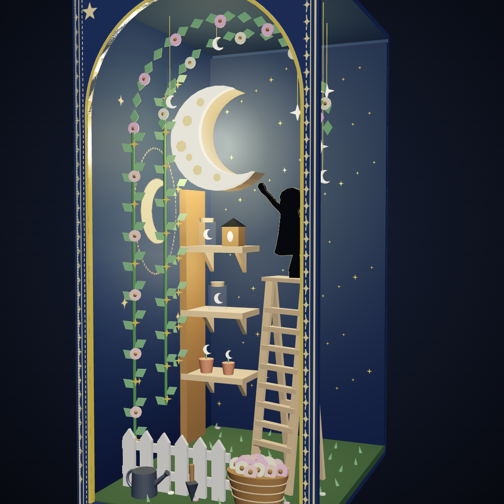
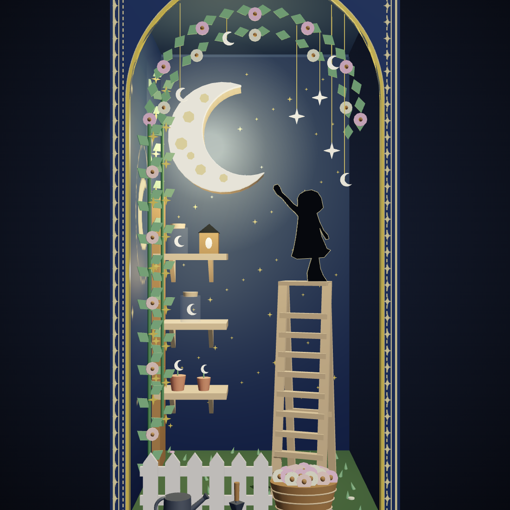
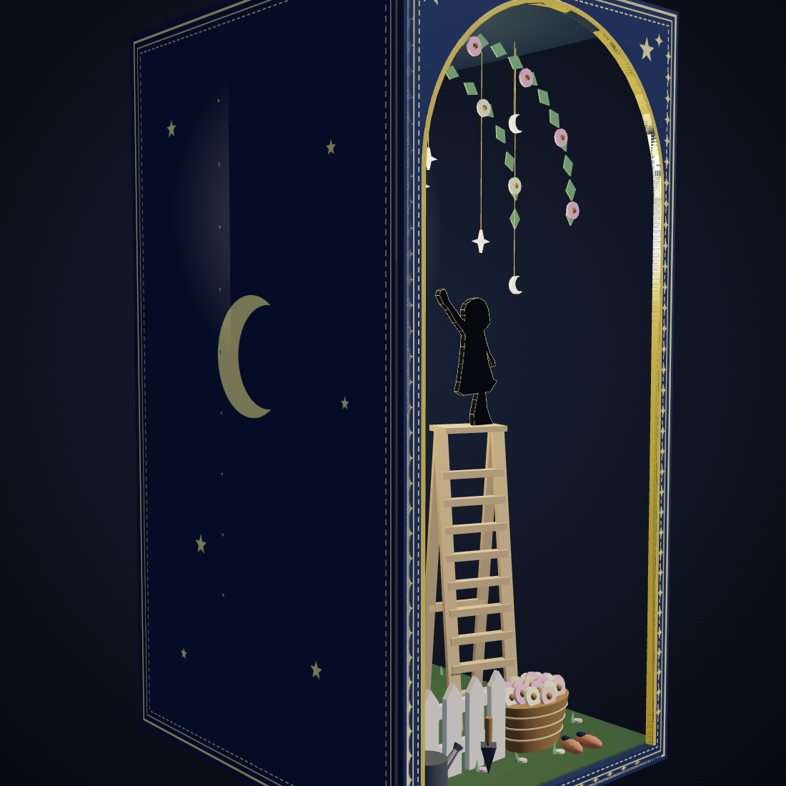
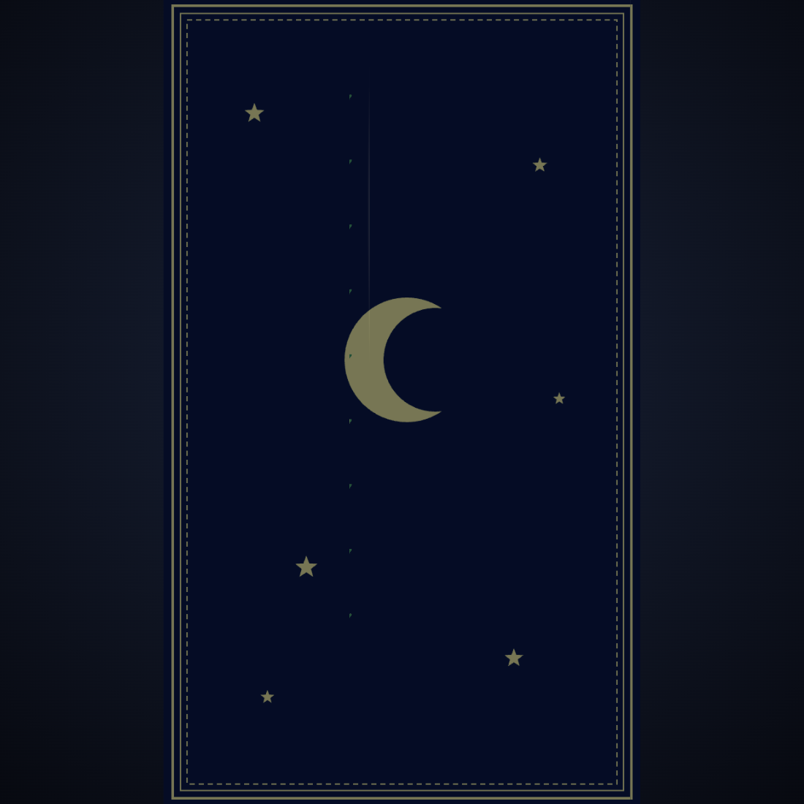
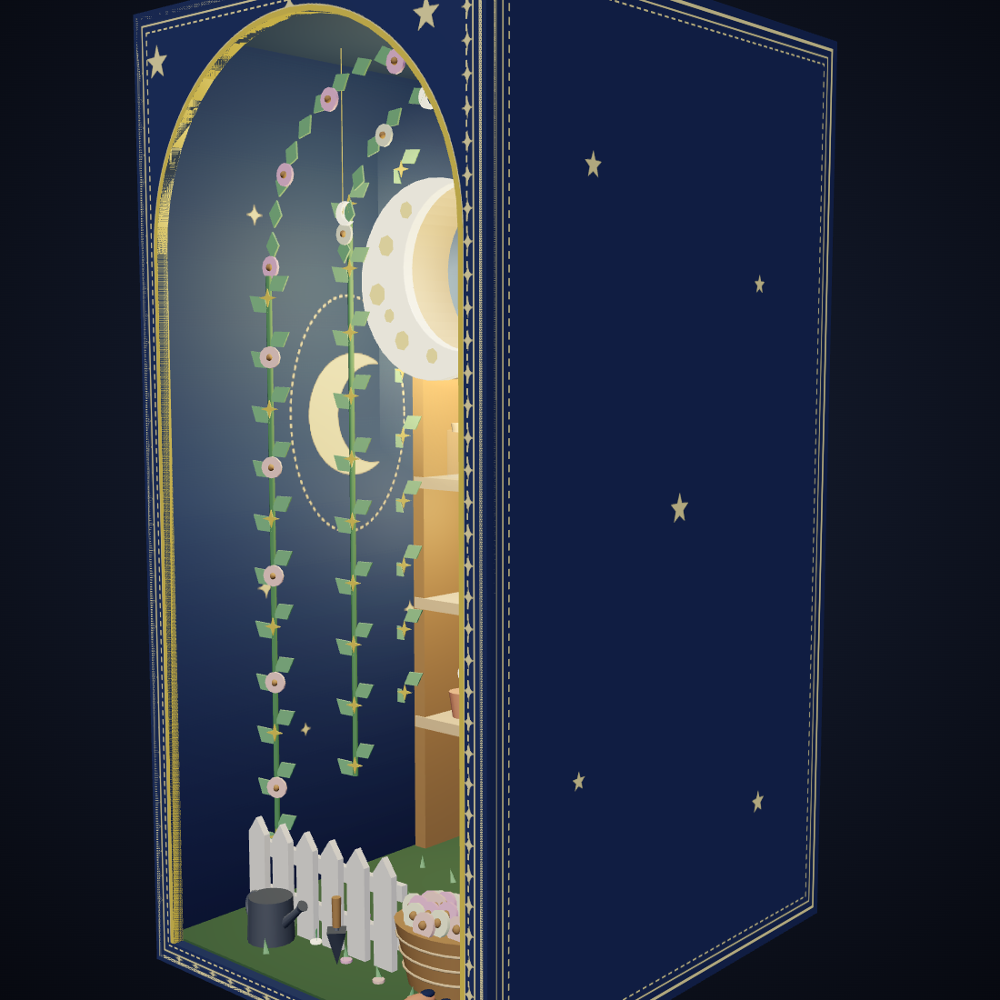
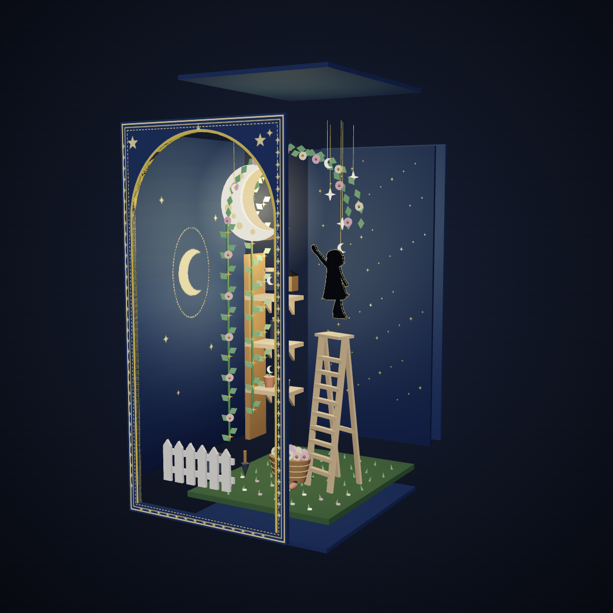

MOON HARVEST FARM · BOOK NOOK
SVG 파일이 무엇이 되는지, 어떤 순서로 만드는지 그림으로 정리했어요. 아래 그림은 3D 모델 화면이에요. 실제 제품 사진도, AI 이미지도 아니에요.
VIDEO
3D 모델로 만든 영상이에요. 자막만 있고 소리는 없어요. 실제 제작 영상이 아니에요.
STEP BY STEP
레이저 장비가 SVG의 선을 따라 합판과 아크릴을 오려 줘요. 오려진 조각을 풀로 붙이고 끼워 맞추면 3D 모델과 같은 모양이 돼요.
이 폴더의 SVG 12개. 재료와 두께는 파일 이름에 적혀 있어요. (예: 합판3mm, 아크릴2mm)
직접 장비를 쓰거나 레이저 커팅 업체·메이커스페이스에 맡겨요. 색(빨강·파랑·검정)마다 하는 작업이 달라요.
조각을 떼어 사포질·염색한 뒤 끼우고 붙여요. 아래 "조립 순서"를 따라 하면 돼요.
WHAT IT LOOKS LIKE
3D 모델(3D-view.html)을 여러 방향에서 캡처한 그림이에요. 단순한 도형으로 만든 모델이라 실제 합판·아크릴 질감과는 달라요.






SHEETS
그림을 누르면 크게 볼 수 있어요. 크기는 실측(mm)이에요. 시트 안에는 부품 이름과 개수가 회색 글씨로 적혀 있어요.
ASSEMBLY
크게 다섯 덩어리로 나눠서 만든 뒤 합쳐요. 처음부터 끝까지 한 번에 다 하지 말고, 덩어리마다 확인하며 진행하세요.
01번 파일을 잘라요. 합판 두께별 홈 게이지와 핑거 시험 조각이 들어 있어요.02번에서 S1~S7을 잘라 떼요.02 시트 (S1·S2·S3·S4·S5)06)의 틈에 선반 3개의 탭을 끼워 붙이고, 아래에 받침 삼각형(05)을 접착해요. 선반 위에 병·랜턴·화분을 올려요.07 LD1)에 발판 9개를 접착하고, 앞·뒤 다리판의 윗탭을 윗발판 슬롯에 함께 끼워 A자로 세워요. 아이 실루엣(09)은 윗발판 기울어진 슬롯에 꽂아요.04)에 종이 잎·꽃·별(11)을 파랑 표시 위치에 붙여요.06 S9): 풀잎·작은 꽃 표시 점에 종이를 붙이고, 슬롯에 기둥·울타리·사다리·덩굴·모종삽을 꽂아요. 꽃바구니·물뿌리개·신발은 접착해요.04 05 06 07 09 1108)을 붙여요. 빛이 비쳐 나와요.03 08 02(S6·S7)GOOD TO KNOW
README.md에 좌표계, 접합 규칙, 3D와 달라진 점이 정리돼 있어요.